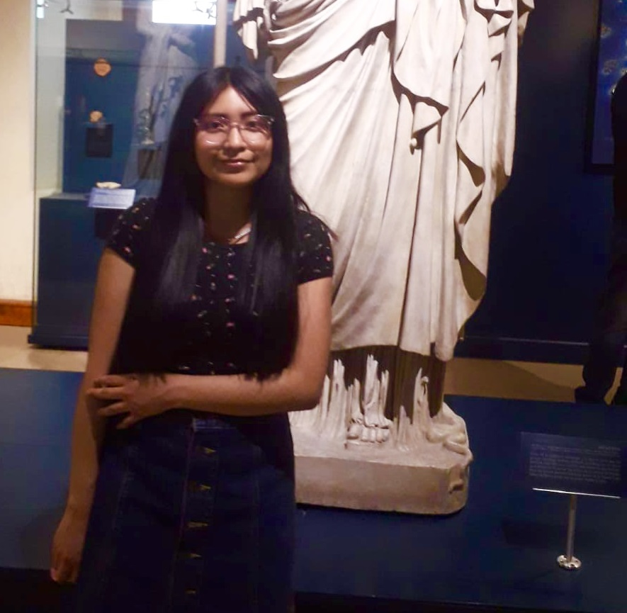

Hola, soy Natalia Esquivel Ocadiz 🌈💻

Soy Natalia Esquivel, estudiante de octavo semestre de Ingeniería Química en la UNAM, me encanta la Química Orgánica pero también me interesan las matemáticas y la programación (he estudiado Python y un poco de lenguaje C), siguiendo en la misma línea de la programación, participé en el el SummerCamp de Tecnolochicas donde he aprendido sobre HTML, CSS y JavasScript, pero no solo eso, ahora también sé que siempre se puede poner en práctica los conocimientos aprendidos, a experimentar e investigar independientemente.
Desarrollo Web
He desarrollado algunos proyectos como un clon de Google y una página propia empleando tecnologías vigentes.
Artículos
Me gusta investigar y escribir sobre la Química, pues esta se encuentra en todo nuestro alrededor y aunque es obvio está llena de curiosidades de las cuales me gusta investigar y escribir
Estudiante
En la carrera de Ingeniería Química, constantemente realizamos proyectos y exposiciones, lo que me gusta es que nos planteamos un problema para luego resolverlo, he tenido materias interesantes como Métodos Numéricos, Termodinámica química e Ingeniería Económica donde he aprendido a usar algunos softwares, pero lo más importante es que me han llevado seguir buscando y desarrollando habilidades tecnológicas.